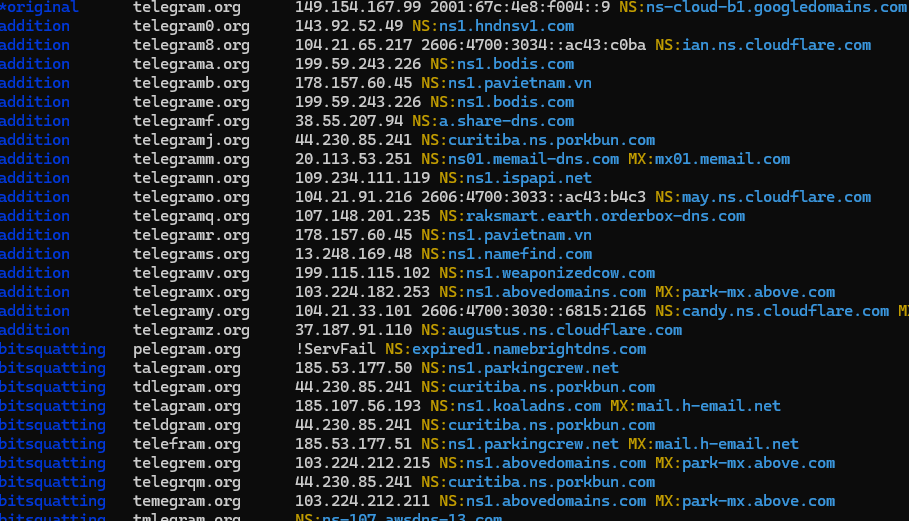
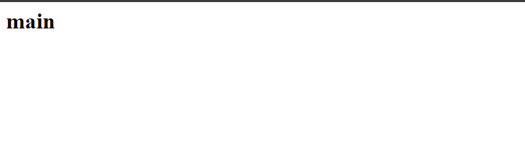
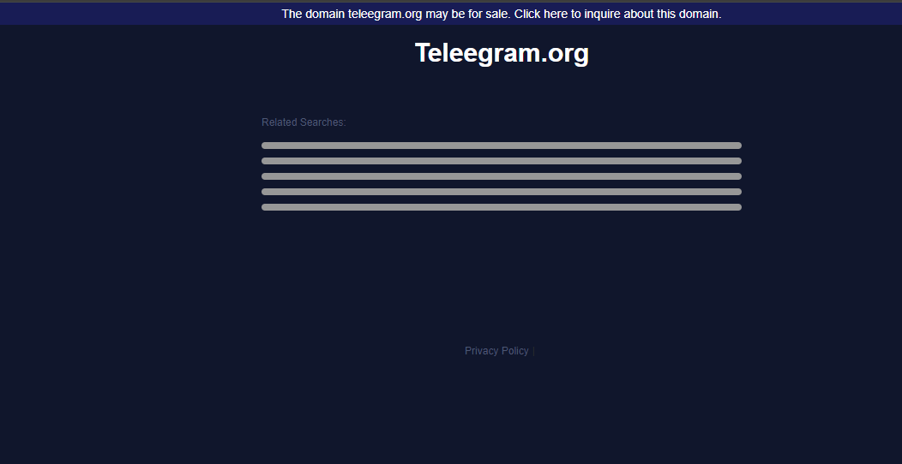
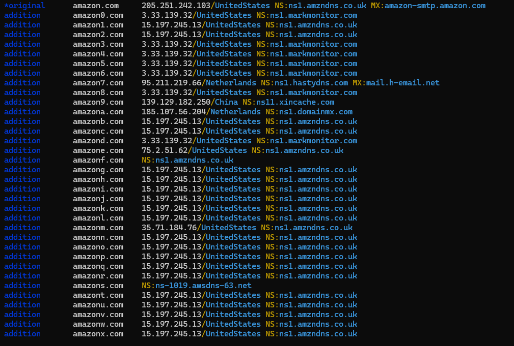

Dnstwist
Dnstwist is a valuable tool for identifying potential phishing domains, typosquatting attempts, and other security risks.
However, the generation of thousands of permutations, especially for longer input domains, can overwhelm analysts with irrelevant data.
To enhance the efficiency and effectiveness of domain fuzzing, it is essential to focus on registered domains. one feature of dnstwist is to give as the typosquatting domain name that are registered.
we use the command below to check registered domain only by using Dnstwist
dnstwist --registered domain.name
let's try this feature by using one popular domain name :- Telegram.org
dnstwist --r telegram.org

i tried some from the out put i get and i will put the screenshoot of what i get:-
Addition telegrama.org 199.59.243.226 NS:ns1.bodis.com
addition telegramm.org 20.113.53.251 NS:ns01.memail-dns.com
hyphenation t-elegram.org 104.21.64.9 2606:4700:3032::ac43:adbc NS:arturo.ns.cloudflare.com

repetition teelegram.org 37.48.65.151 NS:ns1.chookdns.com
.png)
repetition teleegram.org 103.224.212.213 NS:ns1.abovedomains.com MX:park-mx.above.com

The tool can perform real-time lookups to return geographical location (approximated to the country) of IPv4 addresses.

On the other hand, if only selected algorithms need to be used, --fuzzers argument is available, which takes a comma-separated list.
$ dnstwist --fuzzers "homoglyph,hyphenation" domain.name
Compare and contrast dnstwist vs ail-typo-website
|
Dnstwist |
Ail-typo-website |
| User interface |
Only shows permutation, ip address with geoip, name server and mail server |
Shows permutation ,address with geoip , name server,mail server, web title , web similarity and ressoure diff, similarity prob? |
| Output |
List of potential typosquatting domains |
Detailed similarity report |
| Output Download options |
Csv
json
|
List of variation
Domains identified
Mlsp feed
Mlsp json
|
Comparing dnstwist and ail-typo-website by using different domain.names
| Domain names |
Dnstwist |
Ail-typo-website |
| Facebook.com |
4428 permutations
362 registered |
Found 6010
1214 registered
|
| Instagram.com |
5588 permutations
365 registered
|
6166 permutations
605 registered
|
| Amazon.de |
1093 permutations
225 registered
|
5278 permutations
1195 registered
|